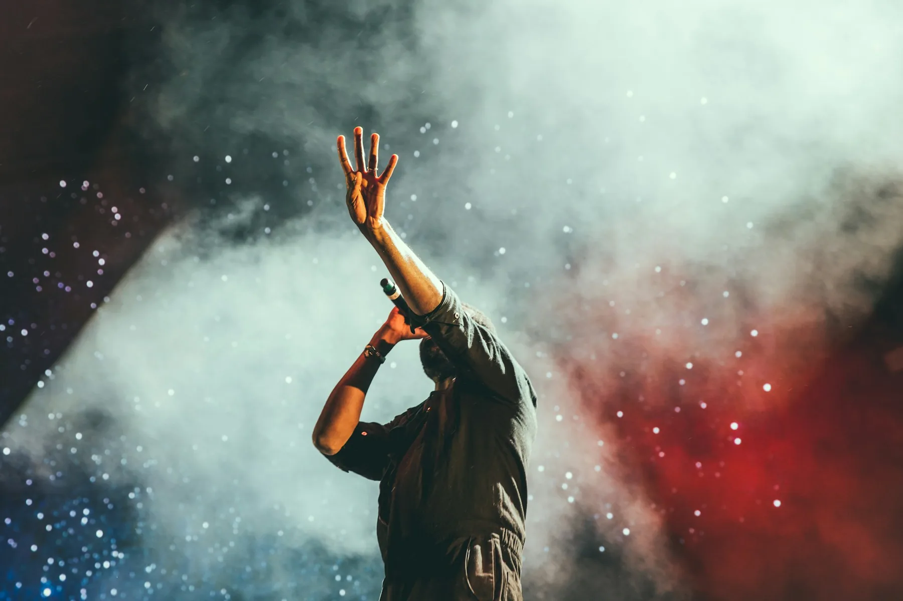
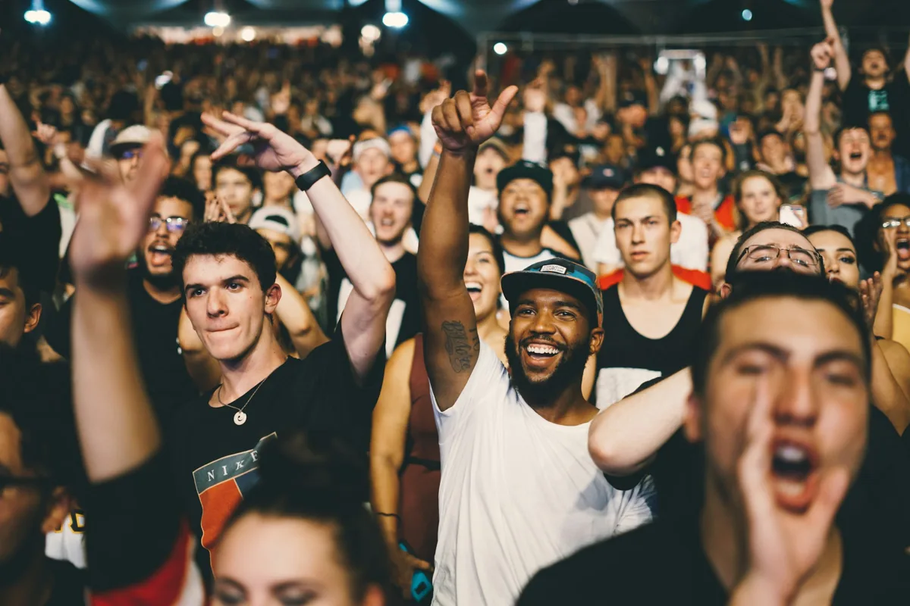
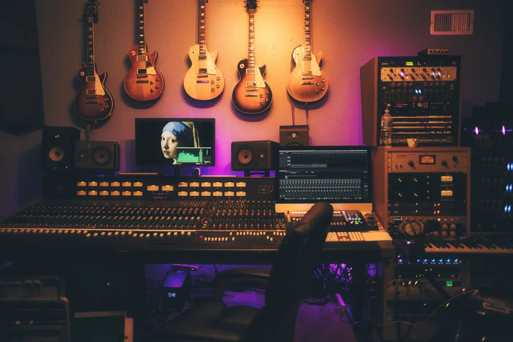

成立于 2021 年，总部位于四川。以成员为中心，创作多元的娱乐与文化内容。
2021年成立
LANP 文化传媒有限公司是一家专注于文化传媒领域的公会，总部位于四川。
我们因共同的热爱聚在一起。团队充满创造力与激情，在娱乐与文化内容的创作中，持续探索新的表达。
在娱乐中相遇，在文化中看见更多。
以创作回应热爱，用多元内容连接用户。

保留创作的个性，也认真对待每一个细节。

我们重视 每一位成员 的表达，在共同创作中，把内容 做得更好。
认真对待内容，也认真对待每一次呈现。
保持创造力与好奇心，尝试不同的表达。
以成员为中心，让共同的热爱继续生长。